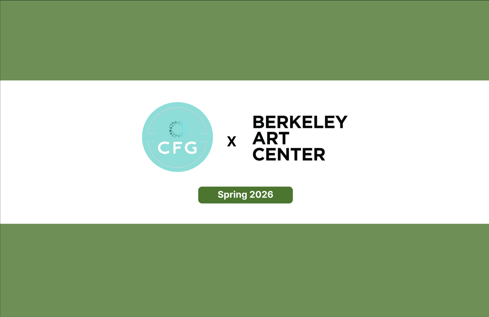

Web Dev, Backend
Artist Cards and Bulletin Board
Overview
Artist profiles and community posts for Berkeley Art Center members.
I planned the artist card structure, bulletin board flow, and backend organization needed to support events, profile information, and highlighted artwork.